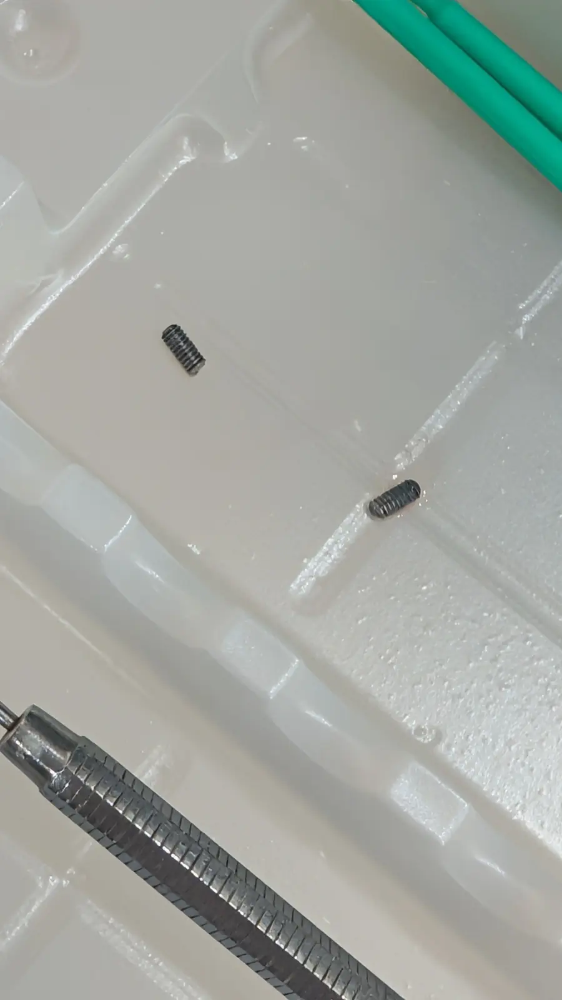

نسخه استخراجشده؛ ترجمه یا تأیید علمی انجام نشده است. وضعیت: captured
پیچ اباتمنت شکسته است، ولی نه در لحظهی تورک اولیه. شکست در آینده و بهصورت ثانویه اتفاق افتاده است. بیرون آوردن باقیماندهی آن چقدر سخت است؟

وقتی روکش لق شده، میدانیم پیچ از قبل شل بوده؛ پس باقیماندهی پیچ تحت فشار تورک بالا قرار نگرفته است. عامل شکست تورک بیشازحد اولیه نبوده، بنابراین پدیدهای مثل cold welding بین پیچ و فیکسچر رخ نداده است.
همهی شکستهای پیچ اباتمنت معادل هم نیستند. شناخت مکانیزم شکست (شل شدن تدریجی در برابر over-torque اولیه) مستقیماً تعیین میکند با یک بحران واقعی روبهرویی یا با یک مشکل قابلکنترل در کلینیک.
وقتی پیچ ایمپلنت بعد از دادن تورک دچار شکست میشود، معمولاً با دو تکه پیچ روبهرویی: یکی گل پیچ بههمراه بخشی از بدنه، و دیگری قسمت انتهایی پیچ که داخل ایمپلنت باقی میماند.
این روش گاهی جواب میدهد، نه همیشه؛ رویکردی حداقلی و محافظهکارانه است که بر حفظ اینترنال ایمپلنت، کنترل نیرو و پرهیز از مداخلهی تهاجمی تکیه دارد.
نوع سؤال: ساخت کلمه · 6 خانه
حروف منبع: ی · ه · و · ث · ا · ن
نوع سؤال: ساخت کلمه · 4 خانه
حروف منبع: م · ر · ض · س